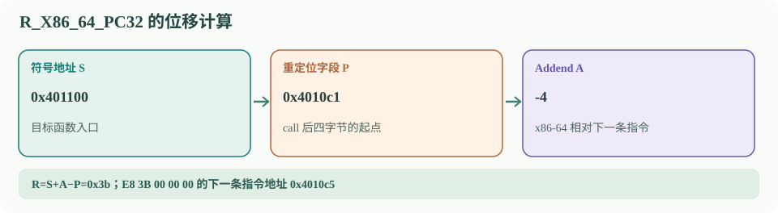

链接器如何把未定义的名字变成可执行地址？
两个源文件分别定义 main() 和 sum()。编译成 .o 后，调用方仍不知道 sum 最终位于哪个地址；因此目标文件留下符号引用和重定位项。链接器必须找到定义、决定布局，再修正相关引用，才能生成可执行文件。
这不是简单拼接字节：ELF 的节、符号表、静态库提取规则和重定位类型共同约束链接结果。下面从可观察的工具输出出发，解释为什么有时会看到 undefined reference，为什么链接顺序会改变静态库解析结果，以及怎样自行验证。
ELF · 符号解析 · 重定位
链接器不是把二进制简单拼起来：它要证明每个引用找得到定义，并把「不知道地址」变成「可执行的地址」。
sum 调用在编译时只留下符号引用和重定位记录；链接器找到定义，才把可执行文件中的引用修补为可到达的目标。第一步：main.o 记录对 sum 的未定义引用；指令中的位移仍待链接器计算。
13.1 ELF 可重定位目标文件
ELF（Executable and Linkable Format）是 Linux 系统上目标文件和可执行文件的标准格式。它从 Solaris 系统引入，现在已经成为 Linux 世界的通用标准。
一个 ELF 可重定位目标文件（.o 文件）的结构如下：
| 节（Section） | 描述 | 常见内容 |
|---|---|---|
.text |
已编译的机器代码 | 所有函数的指令 |
.rodata |
只读数据 | 字符串常量、switch 跳转表 |
.data |
已初始化的全局和静态变量 | int global = 42; |
.bss |
未初始化或初始化为 0 的全局/静态变量 | int global;（实际不占文件空间） |
.symtab |
符号表 | 函数名、全局变量名、地址 |
.rela.text |
.text 节的重定位信息 | x86-64 常见：代码位置与加数、重定位类型 |
.rela.data |
.data 节的重定位信息 | x86-64 常见：数据位置与重定位记录 |
.debug_* |
调试符号表（用 -g 编译时产生） | 行号、局部变量信息 |
.debug_line |
源代码行号与机器码的映射 | 用于调试器 |
.strtab |
字符串表 | 符号名、节名称 |
一个重要的细节：.bss 的未初始化字节不在目标文件中逐字节存储（仍有节元数据）。它只是一个"占位符"，在链接后或运行时被分配内存并初始化为 0。所以你在 C 文件中定义 int big_array[1000000];，.o 文件并不会因此变大 4MB——这些 0 只会在运行时分配。
查看 ELF 文件：Linux 提供了 readelf 和 objdump 工具来检查 ELF 文件。用 readelf -h a.o 查看 ELF 头，readelf -S a.o 查看所有节。编译时加 -g 选项可以看到额外的 .debug 节。
13.2 符号与符号表
每个可重定位目标文件都有一张符号表（.symtab），记录了文件中定义或引用的所有符号。符号分为三类：
- 全局符号（Global Symbols）：在当前文件中定义，可以被其他文件引用。例如非 static 的函数和全局变量。
- 外部符号（External Symbols）：在当前文件中引用但定义在其他文件中的全局符号。链接器需要找到它们的定义。
- 局部符号（Local Symbols）：用 static 定义的函数和变量，只在当前文件可见。注意，局部"自动变量"（函数内的局部变量）不在符号表中——它们在栈上管理，与链接无关。
来看一个旧式 -fcommon 场景下的 readelf -s 示意输出（实际条目、偏移和编号依代码、编译器而定）：
$ readelf -s main.o
Symbol table '.symtab' contains 14 entries:
Num: Value Size Type Bind Vis Ndx Name
0: 0 0 NOTYPE LOCAL DEFAULT UND
1: 0 0 FILE LOCAL DEFAULT ABS main.c
2: 0 0 SECTION LOCAL DEFAULT 1
3: 0 0 SECTION LOCAL DEFAULT 3
4: 0 0 SECTION LOCAL DEFAULT 4
5: 0 0 SECTION LOCAL DEFAULT 5
6: 0 0 SECTION LOCAL DEFAULT 7
7: 0 0 SECTION LOCAL DEFAULT 8
8: 0 4 OBJECT GLOBAL DEFAULT 3 global_var
9: 8 4 OBJECT GLOBAL DEFAULT COM global_weak
10: 16 4 OBJECT GLOBAL DEFAULT 3 global_init
11: 0 36 FUNC GLOBAL DEFAULT 1 main
12: 0 0 NOTYPE GLOBAL DEFAULT UND printf
13: 0 0 NOTYPE GLOBAL DEFAULT UND exit这个输出展示的符号表信息丰富：
global_var（在 .data 节，Ndx=3，已初始化）global_weak（在 COMMON，Ndx=COM，未初始化）global_init（在 .data 节，已初始化）main（函数，在 .text 节，Ndx=1）printf和exit（UND，表示未定义——需要链接器在其他目标文件中解析）
注意：COMMON 记录的是尚未分配到普通节中的暂定定义（依 -fcommon 等编译选项），不是 ELF WEAK 绑定的同义词。现代 GCC 默认采用 -fno-common，详见 13.4 节。
13.3 静态库与 ar 工具
带 .a 后缀的静态归档库（如 libm.a）通常由多个 .o 成员组成，可用 ar 创建。注意 -lm 是否选择静态或共享库取决于链接选项与环境。
# 创建静态库
$ gcc -c addvec.c multvec.c # 编译成 .o
$ ar rcs libvector.a addvec.o multvec.o # 打包成静态库
# 使用静态库
$ gcc -c main.c
$ gcc -o prog main.o -L. -lvector # 链接静态库链接器处理静态库的原则是"按需提取"——只把 main.o 中引用了的目标模块（如 addvec.o）从库中提取出来链接，而不是把整个 libvector.a 都塞进可执行文件。
这就引出了一个非常重要的陷阱：库在命令行中的顺序。
库顺序的致命陷阱：在链接命令中，静态库必须放在引用它的目标文件之后！为什么？因为链接器是从左到右扫描文件列表的。当它看到一个目标文件时，会把该文件引用的未解析符号记录在"待解析列表"中。当它看到一个库时，会检查库中的模块是否能解析当前列表中的符号——如果能，就提取该模块；如果不能，就跳过整个库。所以如果库出现在引用它的文件之前，链接器扫描到库时还不知道需要哪些符号——就跳过了！最终导致 undefined reference 错误。
# 错误示意：静态库在目标文件之前
$ gcc -o prog ./libfoo.a main.o
# 正确：先放产生未解析引用的目标文件
$ gcc -o prog main.o ./libfoo.a
# 互相依赖的静态库：可重复列出，或使用链接器库组
$ gcc -o prog main.o -Wl,--start-group ./libfoo.a ./libbar.a -Wl,--end-group这个陷阱每年坑害无数程序员（包括我自己）。记住：目标文件 → 库1 → 库2，如果有相互依赖，重复列出必要的库。
13.4 强符号、暂定定义与现代 GCC
「强符号 vs 弱符号」是理解经典链接器规则的好模型，但要注意：C 语言的暂定定义不等于 ELF 的 weak 绑定。在文件作用域写 int count; 是暂定定义；编译器可能把它放入 COMMON（旧 GCC 的 -fcommon 行为），也可能直接放入 .bss。
GCC 从 10 起，C 语言默认采用 -fno-common：多个源文件分别写 int count; 往往会在链接时报 multiple definition，而不再静默合并。真正的 ELF 弱符号可以由 __attribute__((weak)) 等机制生成；它与 C 的暂定定义不是一回事。
/* counter.h —— 正确：只放声明 */
#ifndef COUNTER_H
#define COUNTER_H
extern int count;
#endif
/* counter.c —— 仅此处提供定义 */
#include "counter.h"
int count = 0;
/* main.c —— 使用同一个对象 */
#include "counter.h"
int main(void) { return count; }
/* 构建 */
$ cc -std=c11 -Wall -Wextra -fno-common main.c counter.c -o prog反例：不要在会被多个 .c 文件包含的头文件中写 int count;。要演示旧式 COMMON 合并，必须显式用 -fcommon 并说明这是兼容性行为，而不是现代 GCC 的默认结果。
若多个 ELF 全局强定义同名，通常会链接失败；若存在真正的弱定义，强定义可覆盖弱定义。对不同翻译单元中同名对象写不同类型，也不能用「链接器选了谁」来证明它安全：这会破坏类型约定，属于错误的程序设计。
13.5 重定位：从名字到位移
符号解析回答「调用谁」，重定位回答「机器码怎么指向它」。在 x86-64 ELF 中，readelf -rW main.o 能看到类似 R_X86_64_PLT32 的重定位记录；对应的 PC 相对重定位可写成：
其中 S 是被引用符号地址，A 是记录中的加数，P 是重定位位置；不同重定位类型的精确定义和溢出规则应以目标架构 ABI 为准。静态链接后，链接器把计算结果写回相应字段。不要把所有重定位都当成绝对地址填充。
$ cc -std=c11 -O0 -c main.c -o main.o
$ readelf -Ws main.o # 符号表：谁已定义，谁是 UND
$ readelf -rW main.o # 重定位：哪个机器码/数据字段待修补
$ objdump -dr main.o # 反汇编 + 重定位注释
$ cc main.o counter.c -o prog
$ readelf -h prog # 从 ET_REL 变成 ET_DYN 或 ET_EXEC（依工具链选项）上面命令针对前一节的 main.c / counter.c，实际符号名称、重定位条目和 ELF 类型会随优化、PIE 默认设置以及工具链版本改变。
13.6 动手：让链接顺序失败一次
使用仓库里的 最小静态链接实验。它只有 main.c 和 add.c 两个翻译单元，用 ar 打包后分别测试：
$ cc -std=c11 -c add.c -o add.o
$ ar rcs libarith.a add.o
$ cc -std=c11 -c main.c -o main.o
$ cc main.o ./libarith.a -o demo # 成功：调用 sum2(20,22) → 42
$ ./demo
42
$ cc ./libarith.a main.o -o bad # 常见 GNU ld 单次扫描行为下失败尝试解释：为什么交换顺序就可能出现 undefined reference to sum2？如果对库使用 --start-group/--end-group 会改变什么？先根据「扫描时已有的未解析集合」预测结果，再去运行验证。
参考与边界
本章描述以 Linux/x86-64 ELF、GNU binutils 和 GCC 为例；其他平台、架构或链接器行为可能不同。参见 CS:APP 课程资料、GCC 10 迁移说明（默认 -fno-common）、GNU ld 手册 与 readelf 手册。
推导校验 · 13 / REASONING
重定位项如何真的把 call 的 4 个字节改正确？

从一条真正的 x86-64 近相对调用入手。它常用 E8 dd dd dd dd 五字节编码：第一字节是 opcode，后四字节是相对于下一条指令地址的有符号位移。编译目标文件时被调用函数的最终地址可能未知，所以链接器要填写这四字节，而不是直接塞一个 64 位绝对地址。
在 ELF x86-64 重定位记法中，R_X86_64_PC32 的通式为 R = S + A − P，其中 S 是目标符号地址、A 是重定位记录携带的加数、P 是重定位字段自身的地址。下面指定 S=0x401100、P=0x4010c1、A=-4：
3b 00 00 00为什么加数是 −4？因为 P 指向位移字段起点，而 CPU 执行 call rel32 时以整条指令结束处的地址为基准：P+4=0x4010c5，所以位移确实是 S−(P+4)=59。这一步如果把 P 错当成 opcode 地址或下一条指令，就会差 1 或 4 个字节。
| 操作 | 本例结果 | 可验证解释 |
|---|---|---|
| 重定位之前 | E8 00 00 00 00 | 四个占位字节不代表最终目标 |
| 计算位移 | R = 0x3b | 必须装得进有符号 32 位字段 |
| 重定位之后 | E8 3B 00 00 00 | 下一 PC 0x4010c5 + 59 = 0x401100 |
现实差异：现代 GNU 工具链的外部函数调用经常生成 R_X86_64_PLT32 而不是 PC32；可能针对 PLT 入口计算调用目标，不能断言所有 readelf -r 都显示 PC32。用仓库的 examples/deep-ch13-18-reloc.c 编译为 .o，对比 readelf -rW 与 objdump -dr 的重定位字段。
cc -std=c11 -O0 -c examples/deep-ch13-18-reloc.c -o /tmp/deep-reloc.o
readelf -rW /tmp/deep-reloc.o
objdump -dr /tmp/deep-reloc.o
python3 examples/deep-ch13-18-models.py 13本图中的地址是固定输入的算例，并非声称某个实际链接程序恰好加载在这些地址。公式依据 System V AMD64 psABI · Relocation Types；工具行为依据 GNU readelf。
这一章把链接理解为两件事：符号解析寻找定义，重定位修补引用。我们还用真实的静态归档顺序和 GCC 10 之后的暂定定义行为检查了容易误解的链接规则。下一章，我们将讨论静态链接的"进阶版"——动态链接，看看共享库是如何在运行时被加载和解析的。